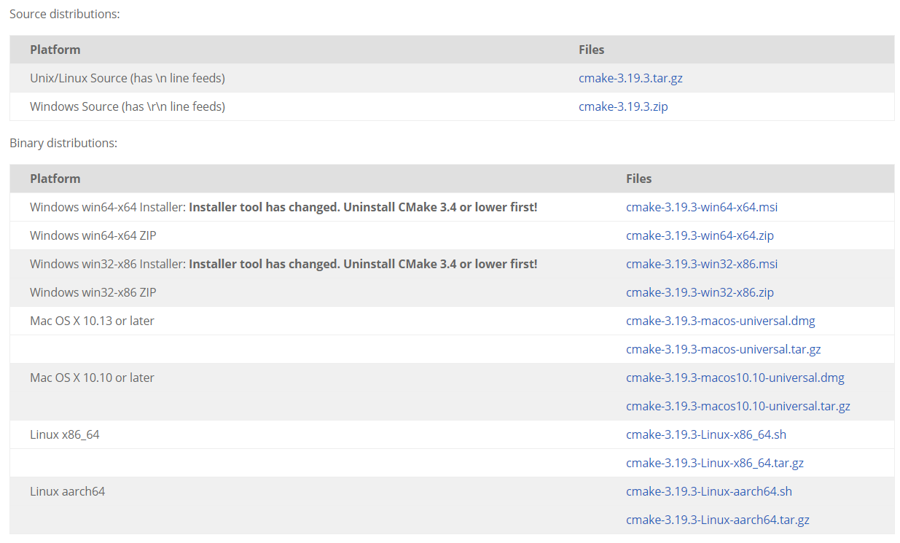

CMake 安装
[toc]
CMake 是什么
CMake是一个跨平台的安装（编译）工具，可以用简单的语句来描述所有平台的安装(编译过程)。他能够输出各种各样的makefile或者project文件，能测试编译器所支持的C++特性，类似UNIX下的automake。只是 CMake 的组态档取名为 CMakeLists.txt。
Cmake 并不直接建构出最终的软件，而是产生标准的建构档（如 Unix 的 Makefile 或 Windows Visual C++ 的 projects/workspaces），然后再依一般的建构方式使用。这使得熟悉某个集成开发环境（IDE）的开发者可以用标准的方式建构他的软件，这种可以使用各平台的原生建构系统的能力是 CMake 和 SCons 等其他类似系统的区别之处。
为什么使用 CMake
跨平台、语法比 makefile 简洁，且现在大量 C++ 开源项目使用 CMake 构建，KDE 项目也是使用 CMake 构建
CMake安装
Linux发行版可直接使用包管理器下载，如 Ubuntu 可直接使用 apt install cmake 下载安装
下载

CMake 官网提供了源码和二进制包
二进制压缩包安装
下载下来的压缩包解压到安装目录
将 bin 目录添加到环境变量
源码安装
安装依赖库
目前我这就缺 OpenSSL
sudo apt install libssl-dev
没有老版本CMake
解压并在目录内打开命令行窗口，依次执行
./bootstrap
make
sudo make install
cmake 会默认安装在 /usr/local/bin 下面 要改变安装路径，在 bootstrap 命令后加上 ‘–prefix=PATH’ 选项。
有以前版本CMake
解压并在目录内打开命令行窗口，依次执行
cmake
make
sudo make install
cmake 会默认安装在 /usr/local/bin 下面 要改变安装路径，在 cmake 命令后加上 ‘-DCMAKE_INSTALL_PREFIX=PATH’ 选项。
验证安装是否成功
打开命令行窗口，输入 cmake --version
输出 cmake version x.x.x 即表示安装成功
实例
CMake 版 Hello World
源文件
CMakeLists.txt
# 要求的CMake最小版本
cmake_minimum_required(VERSION 3.12)
# 项目名称
project(Hello)
# C++标准
set(CMAKE_CXX_STANDARD 11)
# 生成可执行文件
add_executable(${PROJECT_NAME} main.cpp)
main.cpp
#include <iostream>
int main()
{
std::cout << "Hello, World!" << std::endl;
return 0;
}
编译运行
cmake .
make
./Hello
由于个人水平有限，文中若有不合理或不正确的地方欢迎指出改正